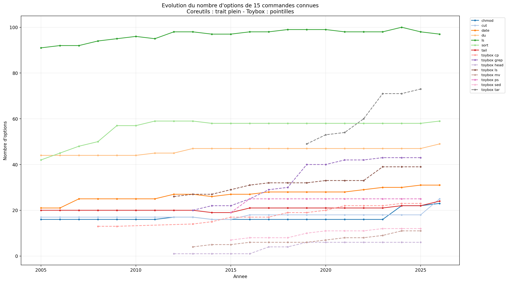
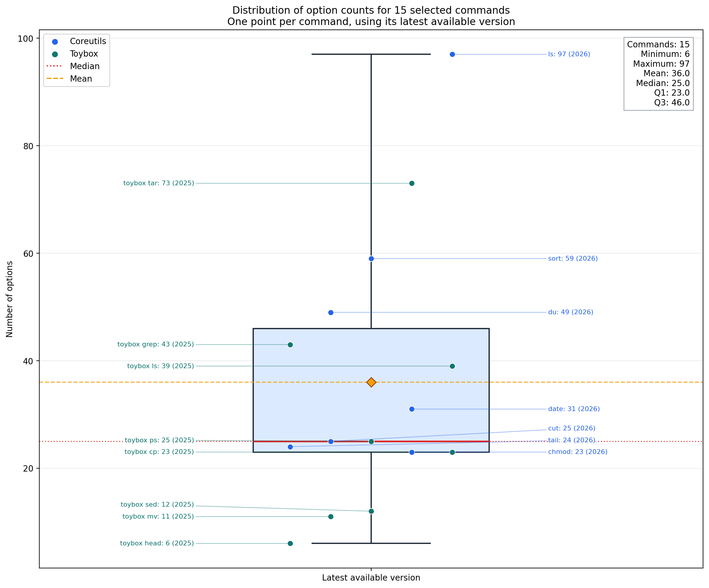

Options in the Wild
Cartographie et analyse des lignes de commande
Base de données : Recherche d'options
Interrogez notre base de données pour connaître la complexité d'un programme selon son environnement et sa version.
Initialisation de la recherche...
▶️ Présentation
Vidéo de présentation
Rapport de recherche
Détail de la méthodologie de l'analyse dynamique des interfaces en ligne de commande.
Si le PDF ne s'affiche pas, cliquez ici pour le télécharger.
Poster scientifique
Aperçu visuel de la présentation de la méthodologie et des résultats principaux.
⬇ Télécharger le poster (PDF) Si le poster ne s'affiche pas, cliquez ici pour le télécharger.
📈 Résultats
Aperçu graphique des analyses comparatives menées sur les programmes du corpus.
Évolution Toybox vs GNU: Les options ne font que se multiplier avec le temps

Évolution de 15 programmes

15 programmes — Boxplot

Ressources à télécharger
Téléchargez l'interface graphique Python ou les données CSV du projet.
Interface graphique — analysez dynamiquement le nombre d'options d'un programme en ligne de commande.
⬇ Page de téléchargement de l'interfaceDonnées CSV — historique des versions et dernières mesures pour tous les programmes analysés.
⬇ Télécharger les CSV (.zip)